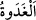
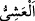

devamlılıktır. Yâni onlar bütün vakitlerde duâya devam ederler. Ya da “__WORD__ el-
gadât/sabah” edilen duâdan maksad, muvaffakiyet ve kolaylık talebi için duâ etmeleri, “__WORD__ el-aşiy/akşam” edilen duâdan maksad ise o günde meydana gelen kusurlarının affı
için duâ etmeleridir.
Bu âyet Mekkeli kâfirlerin reisleri Rasûlullah (s.a.)’den Suheyb, Ammâr ve Habbâb
(r. anhüm) gibi fakir sahâbîleri meclisinden kovmasını istedikleri zaman nâzil olmuştur.
Onlar şöyle dediler: “Nâhoş kokan bu adamları meclisinden kov. Yâni bu yünden elbise
giyen, hırkalarının kokusu bizi rahatsız eden şu değersiz adamları meclisinden
uzaklaştır. O zaman senin yanına gelir, otururuz. Biz müslüman olursak, diğer insanlar
da müslüman olur. Bizim sana uymamıza engel olanlar sadece bunlardır. Çünkü onlar
bayağı kimselerdir.” Nitekim Nuh (a.s.)’ın kavmi de ondan fakir mü’minleri huzurundan
kovmasını istemişler ve: “Sana bir sürü bayağı kimseler uymuşken, biz sana inanır
mıyız?” (eş-Şuarâ, 26/111) demişlerdi. Ancak Allah Teâlâ, kâfirlerden bir topluluğun
inanmasına karşılık fakir mü’minlerin peygamberin huzurundan kovulmasına izin
vermedi.
Eğer denirse ki: “Ehem yâni daha önemli olan, mühimme tercih edilir. Fakir
müslümanların huzurdan uzaklaştırılması, sadece onlar için onur kırıcı olur ve bu az bir
zarardır. Oysa onları peygamberin huzurundan kovmamak, berikilerin küfür üzere
kalmalarına sebep olur. Bu ise daha büyük bir zarardır.” Buna şöyle cevap veririz: Kim
fakirlerle aynı mecliste bulunmaktan çekinerek îmân etmekten yüz çevirirse; bu kimsenin
isteği yerine getirilerek inanmış olsa bile gerçekten îman etmiş olmaz. Bu ancak çirkin
bir münafıklık olur ki ona iltifat etmemek gerekir.” İmam (Râzî)’nin tefsirinde böyle
geçmektedir.
Fakir (Bursevî) der ki: “Peygamberlik, şanı yüce bir vazifedir. Eğer Rasûlullah (s.a.)
kesin olmayan bir husus için onları kovsaydı bu O’nun yüce şanına nisbetle büyük bir
günah olurdu. Hem de bu kabil bir kovma ancak kralların ve zâhir ehlinin büyüklerinin
işidir. Din büyükleri ise bâtınlara ve sırlara bakarak böyle durumlara düşmekten
kaçınırlar.
Âyetteki “vech” rızâdan mecazdır. Yüz ile rızâ arasında şu münâsebet vardır. Kişinin
hoşnutluğu da kızgınlığı da yüzünden belli olur. Telvîh hâşiyesi olan, el-Hevâşi’l-
Huseyniyye’de böyle denilmektedir.
Ey Muhammed “Dünya hayatının süsünü isteyerek” zenginlerle, soylularla ve dünya
ehli ile oturmayı arzu ederek “gözlerini onlardan çevirme.” Yâni, bakışın onlardan
başkasına geçmesin, onları bırakıp başkasına bakma.
Kâşifî der ki: “Gerektir ki senin gözlerin onlardan geçmeye.” Burada yasak gözlere
olsa da esas kasdedilen gözlerin sâhibidir. Yâni Rasûlullah (s.a.)’in zenginlerin
gösterişli kıyafetlerine tamah ederek, gösterişsiz ve eski elbiseler giyen fukarâ
müslümanları küçük görmesi yasaklanmaktadır.
Zünnûn (r.h.) şöyle demiştir: “Burada Allah Teâlâ Rasûlullah (s.a.)’e hitâb etmekte